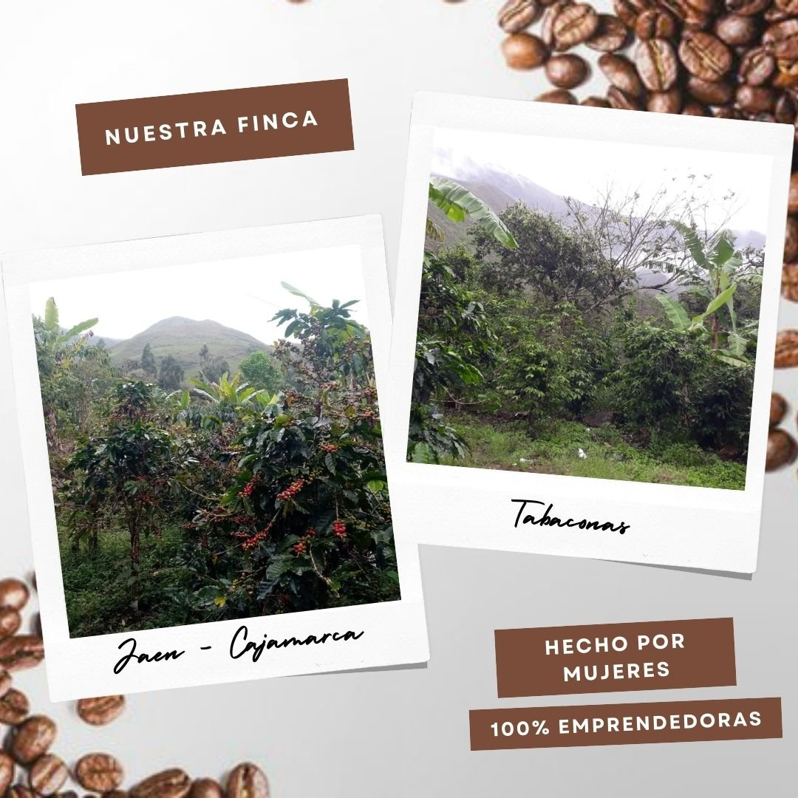

Tenemos café 100% natural traído de Jaén - Cajamarca en presentaciones tostado y molido.
Nuestro café proviene de Jaén - Cajamarca, nos ubicamos a 1700 msnm.
Nuestra marca proviene de una finca familiar donde predomina el emprendimiento femenino.
Velamos que nuestros granos se trabajen de forma natural, por ello la calidad de nuestro café.